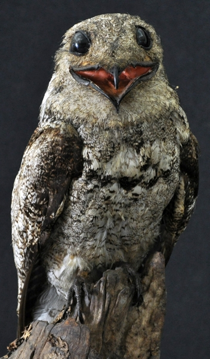

Urutau-Grande
Nyctibius grandis

É conhecido também como Mãe-da-Lua devido ao canto que entoa a noite.
Um dos mitos ao redor da ave, é que ela anuncia o presságio ou aviso da morte.
Ele enxerga de olhos fechados, graças às pequenas fendas nas pálpebras.